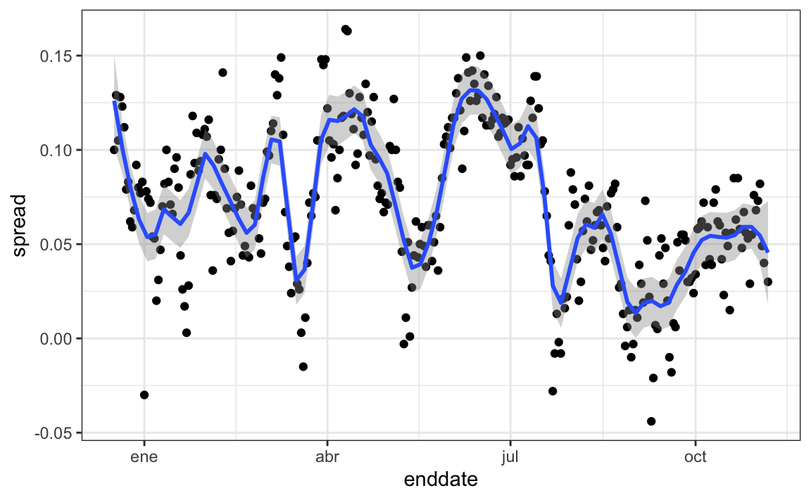
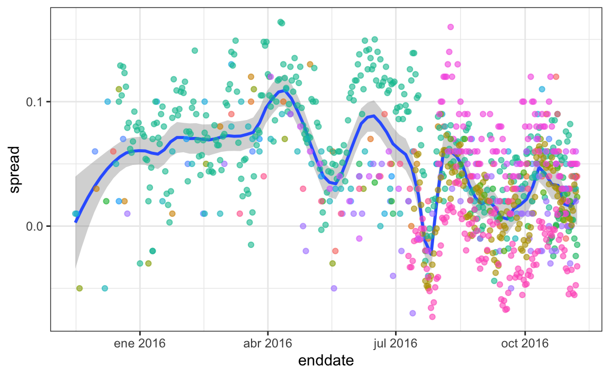
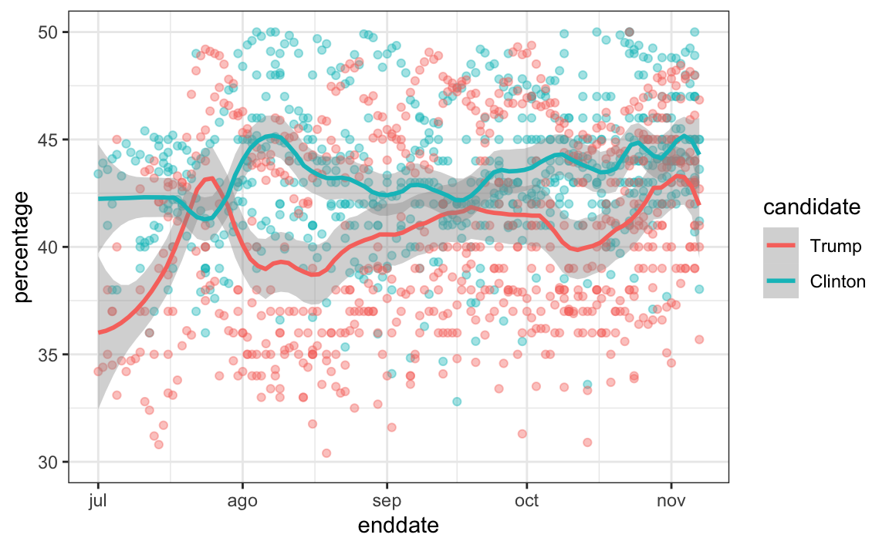

Capítulo 16 Modelos estadísticos
“Todos los modelos están equivocados, pero algunos son útiles.” –George E. P. Box
El día antes de las elecciones presidenciales del 2008, FiveThirtyEight de Nate Silver declaró que “Barack Obama parece estar listo para una victoria electoral decisiva”. Fueron hasta más lejos y predijeron que Obama ganaría las elecciones con 349 votos electorales a 189, y el voto popular por un margen de 6.1%. FiveThirtyEight también añadió una declaración probabilística a su predicción declarando que Obama tenía una probablidad de 91% de ganar las elecciones. Las predicciones fueron bastante precisas y, en los resultados finales, Obama ganó el colegio electoral 365 a 173 y el voto popular por una diferencia de 7.2%. El desempeño de FiveThirtyEight en las elecciones del 2008 atrajo la atención de expertos políticos y personalidades de la televisión. Cuatro años después, la semana antes de las elecciones presidenciales del 2012, Nate Silver de FiveThirtyEight le estaba dando a Obama una probabilidad de 90% de ganar a pesar de que muchos de los expertos pensaban que los resultados finales estarían más cerca. El comentarista político Joe Scarborough dijo durante su show60:
Cualquiera que piense que esta elección no está pareja en este momento es un tremendo ideólogo … son un chiste.
A lo que Nate Silver respondió a través de Twitter:
Si cree que la elección está pareja, apostemos. Si Obama gana, usted dona $1,000 a la Cruz Roja Americana. Si Romney gana, yo lo hago. ¿De acuerdo?
En 2016, Silver no estaba tan seguro y le dio a Hillary Clinton solo una probabilidad de 71% de ganar. En contraste, la mayoría de los otros pronosticadores estaban casi seguros de que ella ganaría. Ella perdió. Pero 71% sigue siendo más de 50%, ¿se equivocó el Sr. Silver? Además, ¿qué significa la probabilidad en este contexto? ¿Alguien está tirando dados?
En este capítulo demostraremos cómo los agregadores de encuestas, como FiveThirtyEight, recopilaron y combinaron datos informados por diferentes expertos para producir mejores predicciones. Introduciremos las ideas detrás de los modelos estadísticos, también conocidos como modelos de probabilidad, que utilizaron los agregadores de encuestas para mejorar los pronósticos electorales en comparación a las encuestas individuales. En este capítulo, motivamos los modelos, construyendo sobre los conceptos de inferencia estadística que aprendimos en el Capítulo 15. Comenzamos con modelos relativamente sencillos, tomando en cuenta que el ejercicio real de la ciencia de datos de pronosticar elecciones involucra algunos modelos bastante complejos, que presentamos al final del capítulo en la Sección 16.8.
16.1 Agregadores de encuestas
Como describimos anteriormente, unas semanas antes de las elecciones del 2012, Nate Silver le estaba dando a Obama una probabilidad de 90% de ganar. ¿Por qué tenía tanta confianza el señor Silver? Utilizaremos una simulación Monte Carlo para ilustrar la idea que tuvo el Sr. Silver y que otros no vieron. Para hacer esto, generamos resultados para 12 encuestas realizadas la semana anterior a las elecciones. Imitaremos tamaños de muestra de encuestas reales y construiremos e informaremos intervalos de confianza de 95% para cada una de las 12 encuestas. Guardaremos los resultados de esta simulación en un set de datos y agregaremos una columna de ID de encuesta.
library(tidyverse)
library(dslabs)
d <- 0.039
Ns <- c(1298, 533, 1342, 897, 774, 254, 812, 324, 1291, 1056, 2172, 516)
p <- (d + 1)/ 2
polls <- map_df(Ns, function(N) {
x <- sample(c(0,1), size=N, replace=TRUE, prob=c(1-p, p))
x_hat <- mean(x)
se_hat <- sqrt(x_hat * (1 - x_hat)/ N)
list(estimate = 2 * x_hat - 1,
low = 2*(x_hat - 1.96*se_hat) - 1,
high = 2*(x_hat + 1.96*se_hat) - 1,
sample_size = N)
}) %>% mutate(poll = seq_along(Ns))Aquí tenemos una visualización que muestra los intervalos que los encuestadores reportaron para la diferencia entre Obama y Romney:

No es sorprendente que las 12 encuestas informen intervalos de confianza que incluyen el resultado de la noche electoral (línea discontinua). Sin embargo, las 12 encuestas también incluyen 0 (línea negra sólida). Por lo tanto, si se les pide individualmente una predicción, los encuestadores tendrían que decir: las probabilidades están parejas. A continuación describimos una idea clave que no consideraron.
Los agregadores de encuestas, como Nate Silver, se dieron cuenta de que al combinar los resultados de diferentes encuestas, la precisión podría mejorar enormemente. Al hacer esto, estamos llevando a cabo una encuesta con un gran tamaño de muestra. Por lo tanto, podemos informar un intervalo de confianza menor de 95% y una predicción más precisa.
Aunque como agregadores no tenemos acceso a los datos sin procesar de la encuesta, podemos usar las matemáticas para reconstruir lo que habríamos obtenido si hubiéramos hecho una encuesta grande con:
participantes. Básicamente, construimos una estimación de la diferencia, llamémosla \(d\), con un promedio ponderado de la siguiente manera:
Una vez que tengamos una estimación de \(d\), podemos construir una estimación de la proporción votando por Obama, que luego podemos usar para estimar el error estándar. Tan pronto hacemos esto, vemos que nuestro margen de error es 0.018.
Por lo tanto, podemos predecir que la diferencia será 3.1 más o menos 1.8, que no solo incluye el resultado real que observamos en la noche de las elecciones, sino que está bastante lejos de incluir 0. Una vez que combinamos las 12 encuestas, estamos seguros de que Obama ganará el voto popular.

Por supuesto, esto fue solo una simulación para ilustrar la idea. El ejercicio real de la ciencia de datos de pronosticar elecciones es mucho más complicado y requiere modelos estadísticos. A continuación explicamos cómo los encuestadores ajustan los modelos multinivel a los datos y los utilizan para pronosticar los resultados electorales. En las elecciones presidenciales estadounidenses del 2008 y 2012, Nate Silver utilizó este enfoque para hacer una predicción casi perfecta y callar a los expertos.
Desde las elecciones del 2008, otras organizaciones han establecido sus propios grupos de pronóstico de elecciones que, como el de Nate Silver, agrega datos de encuestas y utiliza modelos estadísticos para hacer predicciones. En 2016, los pronosticadores subestimaron por mucho las posibilidades de Trump de ganar. El día antes de las elecciones, el New York Times informó61 las siguientes probabilidades de que Hillary Clinton ganara la presidencia:
| NYT | 538 | HuffPost | PW | PEC | DK | Cook | Roth | |
|---|---|---|---|---|---|---|---|---|
| Win Prob | 85% | 71% | 98% | 89% | >99% | 92% | Lean Dem | Lean Dem |
Por ejemplo, el Consorcio Electoral de Princeton (Princeton Election Consortium en inglés) le dio a Trump menos de 1% de probabilidad de ganar, mientras que el Huffington Post le dio una probabilidad de 2%. Por el contrario, FiveThirtyEight le daba a Trump una probabilidad de ganar de 29%, más que la probabilidad de lanzar dos monedas y obtener dos caras. De hecho, cuatro días antes de las elecciones, FiveThirtyEight publicó un artículo titulado Trump is Just A Normal Polling Error Behind Clinton62. Al entender los modelos estadísticos y cómo los pronosticadores los usan, comenzaremos a entender cómo sucedió esto.
Aunque no tan interesante como predecir el colegio electoral, para fines ilustrativos comenzaremos analizando las predicciones para el voto popular. FiveThirtyEight predijo una ventaja de 3.6% para Clinton63 y su intervalo de confianza incluyó el resultado real de una diferencia de 2.1% (48.2% a 46.1%). Además, FiveThirtyEight estuvo mucho más seguro sobre la posibilidad de que Clinton ganara el voto popular, dándole una probabilidad de 81.4%. Su predicción se resumió con un gráfico como este:

Las áreas coloreadas representan valores con una probabilidad de 80% de incluir el resultado real, según el modelo de FiveThirtyEight.
Presentamos datos reales de las elecciones presidenciales de EE. UU. del 2016 para mostrar cómo se motivan y se contruyen los modelos para producir estas predicciones. Para comprender la declaración “81.4% de probabilidad”, necesitamos describir las estadísticas bayesianas, lo que hacemos en las Secciones 16.4 y 16.8.1.
16.1.1 Datos de encuesta
Utilizamos datos de encuestas públicas organizados por FiveThirtyEight para las elecciones presidenciales del 2016. Los datos se incluyen como parte del paquete dslabs:
La tabla incluye los resultados de las encuestas nacionales, así como las encuestas estatales, tomadas durante el año anterior a la elección. Para este primer ejemplo, filtraremos los datos para incluir encuestas nacionales realizadas durante la semana previa a las elecciones. También eliminamos las encuestas que FiveThirtyEight ha determinado que no son confiables y calificaron con una “B” o menos. Algunas encuestas no han sido calificadas e incluimos aquellas:
polls <- polls_us_election_2016 %>%
filter(state == "U.S." & enddate >= "2016-10-31" &
(grade %in% c("A+","A","A-","B+") | is.na(grade)))Agregamos la estimación de la diferencia:
Para este ejemplo, suponemos que solo hay dos partes y llamaremos \(p\) a la proporción de votos para Clinton y \(1-p\) a la proporción votando por Trump. Estamos interesados en la diferencia \(2p-1\). Llamemos a la diferencia \(d\).
Tenemos 49 estimaciones de la diferencia. La teoría que aprendimos nos dice que estas estimaciones son una variable aleatoria con una distribución de probabilidad que es aproximadamente normal. El valor esperado es la diferencia de la noche electoral \(d\) y el error estándar es \(2\sqrt{p (1 - p)/ N}\). Suponiendo que el modelo de urna que describimos anteriormente es bueno, podemos usar esta información para construir un intervalo de confianza basado en los datos agregados. La diferencia estimada es:
y el error estándar es:
p_hat <- (d_hat+1)/2
moe <- 1.96 * 2 * sqrt(p_hat * (1 - p_hat)/ sum(polls$samplesize))
moe
#> [1] 0.00662Entonces informamos una variabilidad de 1.43% con un margen de error de 0.66%. En la noche de las elecciones, descubrimos que el porcentaje real era 2.1%, que está fuera de un intervalo de confianza de 95%. ¿Que pasó?
Un histograma de las variabilidades reportadas muestra un problema:

Los datos no parecen estar distribuidos normalmente y el error estándar parece ser mayor que 0.007. La teoría no está funcionando bien aquí.
16.1.2 Sesgo de los encuestadores
Observen que varios encuestadores están involucrados y algunos toman varias encuestas por semana:
polls %>% group_by(pollster) %>% summarize(n())
#> # A tibble: 15 x 2
#> pollster `n()`
#> <fct> <int>
#> 1 ABC News/Washington Post 7
#> 2 Angus Reid Global 1
#> 3 CBS News/New York Times 2
#> 4 Fox News/Anderson Robbins Research/Shaw & Company Research 2
#> 5 IBD/TIPP 8
#> # … with 10 more rowsVisualicemos los datos de los encuestadores que sondean regularmente:

Este gráfico revela un resultado inesperado. Primero, consideren que el error estándar predicho por la teoría para cada encuesta:
polls %>% group_by(pollster) %>%
filter(n() >= 6) %>%
summarize(se = 2 * sqrt(p_hat * (1-p_hat)/ median(samplesize)))
#> # A tibble: 5 x 2
#> pollster se
#> <fct> <dbl>
#> 1 ABC News/Washington Post 0.0265
#> 2 IBD/TIPP 0.0333
#> 3 Ipsos 0.0225
#> 4 The Times-Picayune/Lucid 0.0196
#> 5 USC Dornsife/LA Times 0.0183está entre 0.018 y 0.033, que concuerda con la variación de encuesta a encuesta que vemos para cada encuestador. Sin embargo, parece haber diferencias entre las encuestadores. Observen, por ejemplo, cómo el encuestador USC Dornsife/LA Times predice una ventaja de 4% para Trump, mientras que Ipsos predice una ventaja mayor de 5% para Clinton. La teoría que aprendimos no dice nada acerca de diferentes encuestadores que producen encuestas con diferentes valores esperados. Todas las encuestas deben tener el mismo valor esperado. FiveThirtyEight se refiere a estas diferencias como “house effects”. También las llamamos sesgo de encuestadores.
En la siguiente sección, en lugar de utilizar la teoría del modelo de urna, desarrollaremos un modelo basado en datos.
16.2 Modelos basados en datos
Para cada encuestador, recopilemos el último resultado que informan antes de las elecciones:
one_poll_per_pollster <- polls %>% group_by(pollster) %>%
filter(enddate == max(enddate)) %>%
ungroup()Aquí hay un histograma de los datos para estos 15 encuestadores:

En la sección anterior, vimos que usar la teoría del modelo de urna para combinar estos resultados a veces no es apropiado debido al efecto de encuestador. En cambio, modelaremos estos datos de las diferencias directamente.
El nuevo modelo también puede considerarse como un modelo de urna, aunque la conexión no es tan directa. En lugar de 0s (republicanos) y 1s (demócratas), nuestra urna ahora contiene los resultados de las encuestas de todos los posibles encuestadores. Suponemos que el valor esperado de nuestra urna es la diferencia real \(d=2p-1\).
Dado que en lugar de 0s y 1s, nuestra urna contiene números continuos entre -1 y 1, la desviación estándar de la urna ya no es \(\sqrt{p(1-p)}\). En vez de la variabilidad del muestreo de votantes, el error estándar ahora incluye la variabilidad entre encuestadores. Nuestra nueva urna también incluye la variabilidad de muestreo del sondeo. De cualquier manera, esta desviación estándar ahora es un parámetro desconocido. En los libros de texto de estadística, el símbolo griego \(\sigma\) se usa para representar este parámetro.
En resumen, tenemos dos parámetros desconocidos: el valor esperado \(d\) y la desviación estándar \(\sigma\).
Nuestra tarea es estimar \(d\). Como modelamos los valores observados \(X_1,\dots X_N\) como una muestra aleatoria de la urna, el CLT aún podría funcionar en esta situación porque es un promedio de variables aleatorias independientes. Para un tamaño de muestra suficientemente grande \(N\), la distribución de probabilidad del promedio de la muestra \(\bar{X}\) es aproximadamente normal con valor esperado \(\mu\) y error estándar \(\sigma/\sqrt{N}\). Si estamos dispuestos a considerar \(N=15\) como suficientemente grande, podemos usar esto para construir intervalos de confianza.
Un problema es que no sabemos \(\sigma\). Pero la teoría nos dice que podemos estimar el modelo de urna \(\sigma\) con la desviación estándar de la muestra definida como \(s = \sqrt{ \sum_{i=1}^N (X_i - \bar{X})^2/ (N-1)}\).
A diferencia de la definición de desviación estándar de la población, ahora dividimos por \(N-1\). Esto hace \(s\) una mejor estimación de \(\sigma\). Hay una explicación matemática para esto, que se explica en la mayoría de los libros de texto de estadística, pero no la cubrimos aquí.
La función sd de R calcula la desviación estándar de la muestra:
Ahora estamos listos para formar un nuevo intervalo de confianza basado en nuestro nuevo modelo y en datos:
results <- one_poll_per_pollster %>%
summarize(avg = mean(spread),
se = sd(spread)/ sqrt(length(spread))) %>%
mutate(start = avg - 1.96 * se,
end = avg + 1.96 * se)
round(results * 100, 1)
#> avg se start end
#> 1 2.9 0.6 1.7 4.1Nuestro intervalo de confianza ahora es más amplio ya que incorpora la variabilidad de encuestador. Incluye el resultado de la noche electoral de 2.1%. Además, tengan en cuenta que era lo suficientemente pequeño como para no incluir 0, lo que significa que estábamos seguros de que Clinton ganaría el voto popular.
¿Estamos listos ahora para declarar una probabilidad de que Clinton gane el voto popular? Aún no. En nuestro modelo \(d\) es un parámetro fijo, por lo que no podemos hablar de probabilidades. Para ofrecer probabilidades, necesitaremos aprender sobre las estadísticas bayesianas.
16.3 Ejercicios
Hemos estado utilizando modelos de urna para motivar el uso de modelos de probabilidad. La mayoría de las aplicaciones de ciencia de datos no están relacionadas con datos obtenidos de urnas. Más comunes son los datos que provienen de individuos. La razón por la que la probabilidad importa aquí es porque los datos provienen de una muestra aleatoria. La muestra aleatoria se toma de una población y la urna sirve como analogía para la población.
Volvamos al conjunto de datos de alturas. Supongamos que consideramos a los varones de nuestra clase como la población.
1. Matemáticamente hablando, x es nuestra población. Usando la analogía de la urna, tenemos una urna con los valores de x dentro de ella. ¿Cuáles son el promedio y la desviación estándar de nuestra población?
2. Llame al promedio de población calculado arriba \(\mu\) y la desviación estándar \(\sigma\). Ahora tome una muestra de tamaño 50, con reemplazo, y construya una estimación para \(\mu\) y \(\sigma\).
3. ¿Qué nos dice la teoría sobre el promedio de la muestra \(\bar{X}\) y como se relaciona con \(\mu\)?
- Es prácticamente idéntico a \(\mu\).
- Es una variable aleatoria con valor esperado \(\mu\) y error estándar \(\sigma/\sqrt{N}\).
- Es una variable aleatoria con valor esperado \(\mu\) y error estándar \(\sigma\).
- No contiene información.
4. Entonces, ¿cómo es esto útil? Vamos a utilizar un ejemplo simplificado pero ilustrativo. Supongamos que queremos saber la altura promedio de nuestros estudiantes varones, pero solo llegamos a medir 50 de los 708. Usaremos \(\bar{X}\) como nuestra estimación. Sabemos por la respuesta al ejercicio 3 que la estimación estándar de nuestro error \(\bar{X}-\mu\) es \(\sigma/\sqrt{N}\). Queremos calcular esto, pero no sabemos \(\sigma\). Según lo que se describe en esta sección, indique su estimación de \(\sigma\).
5. Ahora que tenemos una estimación de \(\sigma\), llamemos a nuestra estimación \(s\). Construya un intervalo de confianza de 95% para \(\mu\).
6. Ahora ejecute una simulación Monte Carlo en la que calcula 10,000 intervalos de confianza como acaba de hacer. ¿Qué proporción de estos intervalos incluye \(\mu\)?
7. En esta sección, discutimos el sesgo de encuestador. Utilizamos la visualización para motivar la presencia de tal sesgo. Aquí le daremos un tratamiento más riguroso. Consideraremos dos encuestadores que realizaron encuestas diarias. Examinaremos las encuestas nacionales del mes anterior a las elecciones.
data(polls_us_election_2016)
polls <- polls_us_election_2016 %>%
filter(pollster %in% c("Rasmussen Reports/Pulse Opinion Research",
"The Times-Picayune/Lucid") &
enddate >= "2016-10-15" &
state == "U.S.") %>%
mutate(spread = rawpoll_clinton/100 - rawpoll_trump/100)Queremos contestar la pregunta: ¿hay un sesgo en la encuesta? Haga un gráfico que muestre la diferencia para cada encuesta.
8. Los datos parecen sugerir que hay una diferencia. Sin embargo, estos datos están sujetos a variabilidad. Quizás las diferencias que observamos se deben al azar.
La teoría del modelo de urna no dice nada sobre el efecto del encuestador. Bajo el modelo de urna, ambos encuestadores tienen el mismo valor esperado: la diferencia del día de las elecciones, que llamamos \(d\).
Para responder a la pregunta “¿hay un modelo de urna?”, modelaremos los datos observados \(Y_{i,j}\) de la siguiente manera:
\[ Y_{i,j} = d + b_i + \varepsilon_{i,j} \]
con \(i=1,2\) indexando los dos encuestadores, \(b_i\) el sesgo para el encuestador \(i\) y \(\varepsilon_{ij}\) representando la variabilidad aleatoria de las encuestas. Suponemos que los \(\varepsilon\) son independientes entre sí, tienen valor esperado \(0\) y desviación estándar \(\sigma_i\) independientemente de \(j\).
¿Cuál de las siguientes mejor representa nuestra pregunta?
- ¿Es \(\varepsilon_{i,j}\) = 0?
- ¿Cuán cerca están los \(Y_{i,j}\) a \(d\)?
- ¿Es \(b_1 \neq b_2\)?
- ¿Son \(b_1 = 0\) y \(b_2 = 0\)?
9. En el lado derecho de este modelo solo \(\varepsilon_{i,j}\) es una variable aleatoria. Los otros dos son constantes. ¿Cuál es el valor esperado de \(Y_{1,j}\)?
10. Supongamos que definimos \(\bar{Y}_1\) como el promedio de los resultados de la encuesta del primer encuestador, \(Y_{1,1},\dots,Y_{1,N_1}\) con \(N_1\) el número de encuestas realizadas por el primer encuestador:
¿Cuál es el valor esperado de \(\bar{Y}_1\)?
11. ¿Cuál es el error estándar de \(\bar{Y}_1\) ?
12. Supongamos que definimos \(\bar{Y}_2\) como el promedio de los resultados de la encuesta de la primera encuesta, \(Y_{2,1},\dots,Y_{2,N_2}\) con \(N_2\) el número de encuestas realizadas por el primer encuestador. ¿Cuál es el valor esperado \(\bar{Y}_2\)?
13. ¿Cuál es el error estándar de \(\bar{Y}_2\) ?
14. Usando lo que aprendimos al responder a las preguntas anteriores, ¿cuál es el valor esperado de \(\bar{Y}_{2} - \bar{Y}_1\)?
15. Usando lo que aprendimos al responder a las preguntas anteriores, ¿cuál es el error estándar de \(\bar{Y}_{2} - \bar{Y}_1\)?
16. La respuesta a la pregunta anterior depende de \(\sigma_1\) y \(\sigma_2\), que no sabemos. Aprendimos que podemos estimarlos con la desviación estándar de la muestra. Escriba un código que calcule estas dos estimaciones.
17. ¿Qué nos dice el CLT sobre la distribución de \(\bar{Y}_2 - \bar{Y}_1\)?
- Nada porque este no es el promedio de una muestra.
- Como el \(Y_{ij}\) son aproximadamente normales, también lo son los promedios.
- Como \(\bar{Y}_2\) y \(\bar{Y}_1\) son promedios de muestras, si suponemos que \(N_2\) y \(N_1\) son lo suficientemente grandes, cada uno es aproximadamente normal. La diferencia de normales también es normal.
- Los datos no son 0 o 1, por lo que el CLT no se aplica.
18. Hemos construido una variable aleatoria que tiene un valor esperado \(b_2 - b_1\), la diferencia de sesgo del encuestador. Si nuestro modelo funciona, entonces esta variable aleatoria tiene una distribución aproximadamente normal y sabemos su error estándar. El error estándar depende de \(\sigma_1\) y \(\sigma_2\), pero podemos usar las desviaciones estándar de muestra que calculamos anteriormente. Comenzamos preguntando: ¿\(b_2 - b_1\) es diferente de 0? Use toda la información que hemos aprendido anteriormente para construir un intervalo de confianza de 95% para la diferencia \(b_2\) y \(b_1\).
19. El intervalo de confianza nos dice que hay un efecto encuestador relativamente fuerte que resulta en una diferencia de aproximadamente 5%. La variabilidad aleatoria no parece explicarlo. Podemos calcular un valor p para explicar el hecho de que el azar no lo explica. ¿Cuál es el valor p?
20. La estadística formada al dividir nuestra estimación de \(b_2-b_1\) por su error estándar estimado:
\[ \frac{\bar{Y}_2 - \bar{Y}_1}{\sqrt{s_2^2/N_2 + s_1^2/N_1}} \]
se llama la estadística t. Ahora observe que tenemos más de dos encuestadores. También podemos probar para el efecto de encuestador utilizando todos los encuestadores, no solo dos. La idea es comparar la variabilidad entre encuestas con la variabilidad dentro de las encuestas. De hecho, podemos construir estadísticas para probar los efectos y aproximar su distribución. El área de estadísticas que hace esto se llama Análisis de la varianza o ANOVA por sus siglas en inglés. No lo cubrimos aquí, pero ANOVA provee un set muy útil de herramientas para responder a preguntas como: ¿hay un efecto encuestador?
Para este ejercicio, cree una nueva tabla:
polls <- polls_us_election_2016 %>%
filter(enddate >= "2016-10-15" &
state == "U.S.") %>%
group_by(pollster) %>%
filter(n() >= 5) %>%
mutate(spread = rawpoll_clinton/100 - rawpoll_trump/100) %>%
ungroup()Calcule el promedio y la desviación estándar para cada encuestador y examine la variabilidad entre los promedios y cómo se compara con la variabilidad dentro de los encuestadores, resumida por la desviación estándar.
16.4 Estadísticas bayesianas
¿Qué significa que un pronosticador electoral nos diga que un candidato tiene un 90% probabilidad de ganar? En el contexto del modelo de urna, esto sería equivalente a afirmar que la probabilidad \(p>0.5\) es 90%. Sin embargo, como discutimos anteriormente, en el modelo de urna \(p\) es un parámetro fijo y no tiene sentido hablar de probabilidad. Con estadísticas bayesianas, modelamos \(p\) como variable aleatoria y, por lo tanto, una declaración como “90% probabilidad de ganar” es coherente.
Los pronosticadores también usan modelos para describir la variabilidad en diferentes niveles. Por ejemplo, la variabilidad de muestreo, la variabilidad de encuestador a encuestador, la variabilidad diaria y la variabilidad de elección a elección. Uno de los enfoques más exitosos utilizados para esto son los modelos jerárquicos, que pueden explicarse en el contexto de las estadísticas bayesianas.
En este capítulo describimos brevemente las estadísticas bayesianas. Para una exploración más profunda de este tema, recomendamos uno de los siguientes libros de texto:
Berger JO (1985). Statistical Decision Theory and Bayesian Analysis, 2nd edition. Springer-Verlag.
Lee PM (1989). Bayesian Statistics: An Introduction. Oxford.
16.4.1 Teorema de Bayes
Comenzamos describiendo el teorema de Bayes. Hacemos esto usando una hipotética prueba de fibrosis quística como ejemplo. Supongamos que una prueba de fibrosis quística tiene una precisión de 99%. Vamos a utilizar la siguiente notación:
\[ \mbox{Prob}(+ \mid D=1)=0.99, \mbox{Prob}(- \mid D=0)=0.99 \]
con \(+\) significando una prueba positiva y \(D\) representando si realmente tiene la enfermedad (1) o no (0).
Supongamos que seleccionamos una persona al azar y dan positivo. ¿Cuál es la probabilidad de que tengan la enfermedad? Escribimos esto como \(\mbox{Prob}(D=1 \mid +)\). La tasa de fibrosis quística es de 1 en 3,900, lo que implica que \(\mbox{Prob}(D=1)=0.00025\). Para responder a esta pregunta, utilizaremos el teorema de Bayes, que en general nos dice que:
\[ \mbox{Pr}(A \mid B) = \frac{\mbox{Pr}(B \mid A)\mbox{Pr}(A)}{\mbox{Pr}(B)} \]
Esta ecuación aplicada a nuestro problema se convierte en:
\[ \begin{aligned} \mbox{Pr}(D=1 \mid +) & = \frac{ P(+ \mid D=1) \cdot P(D=1)} {\mbox{Pr}(+)} \\ & = \frac{\mbox{Pr}(+ \mid D=1)\cdot P(D=1)} {\mbox{Pr}(+ \mid D=1) \cdot P(D=1) + \mbox{Pr}(+ \mid D=0) \mbox{Pr}( D=0)} \end{aligned} \]
usando estos números obtenemos:
\[ \frac{0.99 \cdot 0.00025}{0.99 \cdot 0.00025 + 0.01 \cdot (.99975)} = 0.02 \]
Esto dice que a pesar de que la prueba tiene una precisión de 0.99, la probabilidad de tener la enfermedad dado una prueba positiva es solo 0.02. Aunque parezca contrario al sentido común, la razón de esto es porque tenemos que tener en cuenta la muy rara probabilidad de que una persona, elegida al azar, tenga la enfermedad. Para ilustrar esto, ejecutamos una simulación Monte Carlo.
16.5 Simulación del teorema de Bayes
La siguiente simulación está destinada a ayudarles visualizar el teorema de Bayes. Comenzamos seleccionando aleatoriamente 100,000 personas de una población en la cual la enfermedad en cuestión tiene una prevalencia de 1 en 4,000.
prev <- 0.00025
N <- 100000
outcome <- sample(c("Disease","Healthy"), N, replace = TRUE,
prob = c(prev, 1 - prev))Recuerden que hay muy pocas personas con la enfermedad:
Además, hay muchos sin la enfermedad, lo que hace más probable que veamos algunos falsos positivos dado que la prueba no es perfecta. Ahora cada persona se hace la prueba, que acierta 99% del tiempo:
accuracy <- 0.99
test <- vector("character", N)
test[outcome == "Disease"] <- sample(c("+", "-"), N_D, replace = TRUE,
prob = c(accuracy, 1 - accuracy))
test[outcome == "Healthy"] <- sample(c("-", "+"), N_H, replace = TRUE,
prob = c(accuracy, 1 - accuracy))Debido a que hay muchos más controles que casos, incluso con una tasa baja de falsos positivos obtenemos más controles que los casos en el grupo que dio positivo:
De esta tabla, vemos que la proporción de pruebas positivas que tienen la enfermedad es 23 de 988. Podemos ejecutar esto una y otra vez para ver que, de hecho, la probabilidad converge a aproximadamente 0.022.
16.5.1 Bayes en la práctica
José Iglesias es un jugador de béisbol profesional. En abril de 2013, cuando comenzaba su carrera, se desempeñaba bastante bien:
| Mes | At Bats | H | AVG |
|---|---|---|---|
| abril | 20 | 9 | .450 |
La estadística del promedio de bateo (AVG) es una forma de medir éxito. En términos generales, nos dice la tasa de éxito al batear. Un AVG de .450 significa que José ha tenido éxito el 45% de las veces que ha bateado (At Bats) que es bastante alto, históricamente hablando. Tengan en cuenta que nadie ha terminado una temporada con un AVG de .400 o más desde que Ted Williams lo hizo en 1941. Para ilustrar la forma en que los modelos jerárquicos son eficaces, intentaremos predecir el promedio de bateo de José al final de la temporada. Recuerden que en una temporada típica, los jugadores tienen alrededor de 500 turnos al bate.
Con las técnicas que hemos aprendido hasta ahora, denominadas técnicas frecuentistas, lo mejor que podemos hacer es ofrecer un intervalo de confianza. Podemos pensar en los resultados de batear como un binomio con una tasa de éxito de \(p\). Entonces, si la tasa de éxito es .450, el error estándar de solo 20 turnos al bate:
\[ \sqrt{\frac{.450 (1-.450)}{20}}=.111 \]
Esto significa que nuestro intervalo de confianza es \(.450 - .222\) a \(.450 + .222\) o \(.228\) a \(.672\).
Esta predicción tiene dos problemas. Primero, es muy grande, por lo que no es muy útil. Segundo, está centrada en .450, lo que implica que nuestra mejor conjetura es que este nuevo jugador romperá el récord de Ted Williams.
Sin embargo, para los fanáticos del béisbol, esta última afirmación no tiene sentido. Los fanáticos implícitamente emplean un modelo jerárquico que toma en cuenta la información de años de seguir el béisbol. Aquí mostramos cómo podemos cuantificar esta intuición.
Primero, exploremos la distribución de los promedios de bateo para todos los jugadores con más de 500 turnos al bate durante las tres temporadas anteriores:

El jugador promedio tuvo un AVG de .275 y la desviación estándar de la población de jugadores fue 0.027. Entonces podemos ver que .450 sería una anomalía, ya que está a más de seis desviaciones estándar de la media.
Entonces, ¿tiene suerte José o es el mejor bateador de los últimos 50 años? Quizás sea una combinación de suerte y talento. ¿Pero cuánto de cada uno? Si nos convencemos de que tiene suerte, deberíamos cambiarlo a otro equipo que confíe en la observación de .450 y tal vez sobreestime su potencial.
16.6 Modelos jerárquicos
El modelo jerárquico ofrece una descripción matemática de cómo llegamos a ver la observación de .450. Primero, elegimos un jugador al azar con una habilidad intrínseca resumida por, por ejemplo, \(p\). Luego vemos 20 resultados aleatorios con probabilidad de éxito \(p\).
Utilizamos un modelo para representar dos niveles de variabilidad en nuestros datos. Primero, a cada jugador se le asigna una habilidad natural para batear. Usaremos el símbolo \(p\) para representar esta habilidad. Pueden pensar en \(p\) como el promedio de bateo al que convergería si este jugador en particular bateara repetidas veces.
De acuerdo con los graficos que mostramos anteriormente, asumimos que \(p\) tiene una distribución normal, con valor esperado .270 y error estándar 0.027.
Ahora el segundo nivel de variabilidad tiene que ver con la suerte al batear. Independientemente de lo bueno que sea el jugador, a veces tiene mala suerte y a veces tiene buena suerte. En cada turno al bate, este jugador tiene una probabilidad de éxito \(p\). Si sumamos estos éxitos y fracasos, entonces el CLT nos dice que el promedio observado, llámelo \(Y\), tiene una distribución normal con el valor esperado \(p\) y error estándar \(\sqrt{p(1-p)/N}\) con \(N\) el número de turnos al bate.
Los libros de texto estadísticos escribirán el modelo así: \[ \begin{aligned} p &\sim N(\mu, \tau^2) \\ Y \mid p &\sim N(p, \sigma^2) \end{aligned} \] Aquí el símbolo \(\sim\) nos dice que la variable aleatoria a la izquierda del símbolo sigue la distribución a la derecha y \(N(a,b^2)\) representa la distribución normal con media \(a\) y desviación estándar \(b\). El \(\mid\) significa que estamos condicionando en la variable aleatoria a la derecha del símbolo como si se conociera su valor. Nos referimos al modelo como jerárquico porque necesitamos saber \(p\), el primer nivel, para modelar \(Y\), el segundo nivel. En nuestro ejemplo, el primer nivel describe la aleatoriedad en la asignación de talento a un jugador y en el segundo se describe la aleatoriedad en el desempeño de este jugador una vez fijemos el parámetro de talento. En un marco bayesiano, el primer nivel se llama distribución a priori y el segundo la distribución muestral. El análisis de datos que hemos realizado aquí sugiere que establezcamos \(\mu = .270\), \(\tau = 0.027\) y \(\sigma^2 = p(1-p)/N\).
Ahora, usemos este modelo para los datos de José. Supongamos que queremos predecir su habilidad innata en la forma de su verdadero promedio de bateo \(p\). Este sería el modelo jerárquico para nuestros datos:
\[ \begin{aligned} p &\sim N(.275, .027^2) \\ Y \mid p &\sim N(p, .111^2) \end{aligned} \]
Ahora estamos listos para calcular una distribución a posteriori para resumir nuestra predicción de \(p\). La versión continua de la regla de Bayes se puede usar aquí para derivar la función de probabilidad a posteriori, que es la distribución de \(p\) suponiendo que observemos \(Y=y\). En nuestro caso, podemos demostrar que cuando fijamos \(Y=y\), \(p\) sigue una distribución normal con el valor esperado:
\[ \begin{aligned} \mbox{E}(p \mid Y=y) &= B \mu + (1-B) y\\ &= \mu + (1-B)(y-\mu)\\ \mbox{with } B &= \frac{\sigma^2}{\sigma^2+\tau^2} \end{aligned} \]
Este es un promedio ponderado del promedio de la población \(\mu\) y los datos observados \(y\). El peso depende de la SD de la población \(\tau\) y de la SD de nuestros datos observados \(\sigma\). Este promedio ponderado a veces se denomina contracción (shrinking en inglés) porque contrae las estimaciones hacia la media de la distribución a priori. En el caso de José Iglesias tenemos:
\[ \begin{aligned} \mbox{E}(p \mid Y=.450) &= B \times .275 + (1 - B) \times .450 \\ &= .275 + (1 - B)(.450 - .275) \\ B &=\frac{.111^2}{.111^2 + .027^2} = 0.944\\ \mbox{E}(p \mid Y=450) &\approx .285 \end{aligned} \]
No mostramos la derivación aquí, pero el error estándar se puede demostrar que es:
\[ \mbox{SE}(p\mid y)^2 = \frac{1}{1/\sigma^2+1/\tau^2} = \frac{1}{1/.111^2 + 1/.027^2} = 0.00069 \] y, por lo tanto, la desviación estándar es \(0.026\). Entonces comenzamos con un intervalo de confianza frecuentista de 95% que ignoraba los datos de otros jugadores y resumía solo los datos de José: .450 \(\pm\) 0.220. Luego usamos un enfoque bayesiano que incorporaba datos de otros jugadores y otros años para obtener una probabilidad a posteriori. De hecho, esto se conoce como un enfoque empírico bayesiano porque utilizamos datos para construir la distribución a priori. Desde la distribución a posteriori, podemos calcular lo que se llama un intervalo de confianza de Bayes o intervalo de Bayes (credible interval en inglés) de 95%. Para hacer esto, construimos una región, centrada en la media, con una probabilidad de 95% de ocurrir. En nuestro caso, esto resulta ser: .285 \(\pm\) 0.052.
El intervalo de Bayes sugiere que si otro equipo está impresionado por el promedio observado de .450, deberíamos considerar cambiar a José, ya que pronosticamos que estará ligeramente por encima del promedio. Curiosamente, los Red Sox cambiaron a José a los Detroit Tigers en julio. Estos son los promedios de bateo de José Iglesias para los próximos cinco meses:
| Mes | At Bat | Hits | AVG |
|---|---|---|---|
| abril | 20 | 9 | .450 |
| mayo | 26 | 11 | .423 |
| junio | 86 | 34 | .395 |
| julio | 83 | 17 | .205 |
| agosto | 85 | 25 | .294 |
| septiembre | 50 | 10 | .200 |
| Total sin abril | 330 | 97 | .293 |
Aunque ambos intervalos incluyeron el promedio final de bateo, el intervalo de Bayes ofreció una predicción mucho más precisa. En particular, predijo que no sería tan bueno durante el resto de la temporada.
16.7 Ejercicios
1. En 1999, en Inglaterra, Sally Clark64 fue declarada culpable del asesinato de dos de sus hijos. Ambos bebés fueron encontrados muertos por la mañana, uno en 1996 y otro en 1998. En ambos casos, Clark afirmó que la causa de la muerte fue el Síndrome de muerte súbita del lactante (SIDS o Sudden Infant Death Syndrome en inglés). A ninguno de los niños le encontraron lesiones físicas, por lo que la principal evidencia en su contra fue el testimonio del profesor Sir Roy Meadow, quien testificó que las probabilidades de que dos niños de la misma madre murieran de SIDS eran de 1 en 73 millones. Llegó a esta cifra al encontrar que la tasa de SIDS era de 1 en 8,500 y luego calcular que la posibilidad de dos casos de SIDS era 8,500 \(\times\) 8,500 \(\approx\) 73 millones. ¿Con cuál de las siguientes declaraciones está de acuerdo?
- Sir Meadow supuso que la probabilidad de que el segundo hijo fuera afectado por el SIDS era independiente de la del primer hijo afectado, ignorando así las posibles causas genéticas. Si la genética juega un papel, entonces: \(\mbox{Pr}(\mbox{second case of SIDS} \mid \mbox{first case of SIDS}) < \mbox{P}r(\mbox{first case of SIDS})\).
- Nada. La regla de multiplicación siempre se aplica de esta manera: \(\mbox{Pr}(A \mbox{ and } B) =\mbox{Pr}(A)\mbox{Pr}(B)\)
- Sir Meadow es un experto y debemos confiar en sus cálculos.
- Los números no mienten.
2. Supongamos que definitivamente hay un componente genético para el SIDS y la probabilidad de \(\mbox{Pr}(\mbox{second case of SIDS} \mid \mbox{first case of SIDS}) = 1/100\), es mucho mayor que 1 en 8,500. ¿Cuál es la probabilidad de que sus dos hijos mueran de SIDS?
3. Muchos informes de prensa declararon que el experto afirmó que la probabilidad de que Sally Clark fuera inocente era 1 en 73 millones. Quizás el jurado y el juez también interpretaron el testimonio de esta manera. Esta probabilidad se puede escribir como la probabilidad de que una madre sea una psicópata asesina de hijos, dado que encuentran a dos de sus hijos muertos sin lesiones físicas. Según la regla de Bayes, ¿cuánta es esta probabilidad?
4. Suponga que la probabilidad de que una psicópata asesina de hijos encuentre la manera de matar a sus hijos, sin dejar evidencia física, es:
\[ \mbox{Pr}(A \mid B) = 0.50 \]
con \(A =\) dos de sus hijos los encuentran muertos sin lesiones físicas y \(B =\) una madre es una psicópata asesina de hijos = 0.50. Suponga que la tasa de madres psicópatas que asesinan hijos es 1 en 1,000,000. Según el teorema de Bayes, ¿cuál es la probabilidad de \(\mbox{Pr}(B \mid A)\)?
5. Después de que Sally Clark fue declarada culpable, la Royal Statistical Society emitió un comunicado diciendo que “no había base estadística” para el reclamo del experto. Expresaron preocupación por el “mal uso de las estadísticas en los tribunales”. Sally Clark fue absuelta en junio de 2003. ¿Qué no consideró el experto Sir Roy Meadow?
- Cometió un error aritmético.
- Cometió dos errores. Primero, hizo un mal uso de la regla de multiplicación y, segundo, no tomó en cuenta lo raro que es que una madre asesine a sus hijos. Después de usar la regla de Bayes, encontramos una probabilidad más cercana a 0.5 que a 1 en 73 millones.
- Confundió el numerador y el denominador de la regla de Bayes.
- No usó R.
6. Florida es uno de los estados más vigilados en las elecciones de EE. UU. porque tiene muchos votos electorales, y las elecciones generalmente son cerradas. Además, Florida tiende a ser un estado decisivo que puede votar por cualquiera de los dos partidos. Cree la siguiente tabla con las encuestas realizadas durante las últimas dos semanas:
library(tidyverse)
library(dslabs)
data(polls_us_election_2016)
polls <- polls_us_election_2016 %>%
filter(state == "Florida" & enddate >= "2016-11-04" ) %>%
mutate(spread = rawpoll_clinton/100 - rawpoll_trump/100)Tome la diferencia promedio de estas encuestas. El CLT nos dice que este promedio es aproximadamente normal. Calcule un promedio y provea una estimación del error estándar. Guarde sus resultados en un objeto llamado results.
7. Ahora supone un modelo bayesiano con distribución a priori normal para la diferencia de la noche electoral de Florida \(d\) con valor esperado \(\mu\) y desviación estándar \(\tau\). ¿Cuáles son las interpretaciones de \(\mu\) y \(\tau\)?
- \(\mu\) y \(\tau\) son números arbitrarios que nos permiten hacer declaraciones de probabilidad sobre \(d\).
- \(\mu\) y \(\tau\) resumen lo que predeciríamos para Florida antes de ver las encuestas. Basado en elecciones pasadas, fijaríamos \(\mu\) cerca de 0 porque tanto republicanos como demócratas han ganado, y \(\tau\) en aproximadamente \(0.02\), porque estas elecciones tienden a ser cerradas.
- \(\mu\) y \(\tau\) resumen lo que queremos que sea verdad. Por lo tanto, fijamos \(\mu\) en \(0.10\) y \(\tau\) en \(0.01\).
- La desición de que distribución a priori usar no tiene ningún efecto en el análisis bayesiano.
8. El CLT nos dice que nuestra estimación de la diferencia, \(\hat{d}\), tiene distribución normal con valor esperado \(d\) y desviación estándar \(\sigma\) calculada en el problema 6. Use las fórmulas que mostramos para la distribución a posteriori para calcular el valor esperado de la distribución a posteriori si fijamos \(\mu = 0\) y \(\tau = 0.01\).
9. Ahora calcule la desviación estándar de la distribución a posteriori.
10. Usando el hecho de que la distribución a posteriori es normal, cree un intervalo que tenga un 95% de probabilidad de ocurrir centrado en el valor esperado a posteriori. Recuerden que estos los llamamos intervalos de Bayes.
11. Según este análisis, ¿cuál fue la probabilidad de que Trump ganara Florida?
12. Ahora use la función sapply para cambiar la varianza de la probabilidad a priori de seq(0.05, 0.05, len = 100) y observe cómo cambia la probabilidad haciendo un gráfico.
16.8 Estudio de caso: pronóstico de elecciones
En una sección anterior, generamos las siguientes tablas de datos:
library(tidyverse)
library(dslabs)
polls <- polls_us_election_2016 %>%
filter(state == "U.S." & enddate >= "2016-10-31" &
(grade %in% c("A+","A","A-","B+") | is.na(grade))) %>%
mutate(spread = rawpoll_clinton/100 - rawpoll_trump/100)
one_poll_per_pollster <- polls %>% group_by(pollster) %>%
filter(enddate == max(enddate)) %>%
ungroup()
results <- one_poll_per_pollster %>%
summarize(avg = mean(spread), se = sd(spread)/sqrt(length(spread))) %>%
mutate(start = avg - 1.96*se, end = avg + 1.96*se)A continuación, las utilizaremos para nuestro pronóstico.
16.8.1 Enfoque bayesiano
Los encuestadores tienden a hacer declaraciones probabilísticas sobre los resultados de las elecciones. Por ejemplo, “La probabilidad de que Obama gane el colegio electoral es 91%” es una declaración probabilística sobre un parámetro que en secciones anteriores hemos denotado con \(d\). Mostramos que para las elecciones del 2016, FiveThirtyEight le dio a Clinton una probabilidad de 81.4% de ganar el voto popular. Para hacer esto, utilizaron el enfoque bayesiano que describimos anteriormente.
Suponemos un modelo jerárquico similar al que hicimos para predecir el desempeño de un jugador de béisbol. Los libros de texto estadísticos escribirán el modelo así:
\[ \begin{aligned} d &\sim N(\mu, \tau^2) \mbox{ describes our best guess had we not seen any polling data}\\ \bar{X} \mid d &\sim N(d, \sigma^2) \mbox{ describes randomness due to sampling and the pollster effect} \end{aligned} \]
Para hacer nuestro mejor pronóstico, notamos que antes de que haya datos de encuestas disponibles, podemos usar fuentes de datos que no son datos de encuestas. Un enfoque popular es utilizar lo que los encuestadores llaman fundamentals, que se basan en características que históricamente parecen tener un efecto a favor o en contra del partido en poder como, por ejemplo, el estado de la economía. No usaremos estos aquí. En cambio, usaremos \(\mu = 0\), que se interpreta como un modelo que no ofrece información sobre quién ganará. Para la desviación estándar, usaremos datos históricos recientes que muestran que el ganador del voto popular tiene una variabilidad promedio de aproximadamente 3.5%. Por lo tanto, fijamos \(\tau = 0.035\).
Ahora podemos usar las fórmulas para la distribución a posteriori del parámetro \(d\): la probabilidad de que \(d>0\) dado los datos de la encuesta observada:
mu <- 0
tau <- 0.035
sigma <- results$se
Y <- results$avg
B <- sigma^2/ (sigma^2 + tau^2)
posterior_mean <- B*mu + (1-B)*Y
posterior_se <- sqrt( 1/ (1/sigma^2 + 1/tau^2))
posterior_mean
#> [1] 0.0281
posterior_se
#> [1] 0.00615Para hacer una declaración de probabilidad, usamos el hecho de que la distribución a posteriori también es normal. Y tenemos un intervalo de confianza de Bayes de:
La probabilidad a posteriori \(\mbox{Pr}(d>0 \mid \bar{X})\) se puede calcular así:
Esto dice que estamos 100% seguros de que Clinton ganará el voto popular, lo que parece demasiado confiado. Además, no está de acuerdo con el 81.4% de FiveThirtyEight. ¿Qué explica esta diferencia?
16.8.2 El sesgo general
Una vez finalizadas las elecciones, se puede observar la diferencia entre las predicciones de los encuestadores y el resultado real. Una observación importante que nuestro modelo no considera es que es común ver un sesgo general que afecta a muchos encuestadores de la misma manera, que entonces conduce a que los datos observados estén correlacionados. No hay una buena explicación para esto, pero se observa en datos históricos: en una elección, el promedio de las encuestas favorece a los demócratas por 2%, luego en las siguientes elecciones favorece a los republicanos por 1%, entonces en las próximas elecciones no hay sesgo, luego en la siguiente los republicanos son los favoritos por 3%, y así sucesivamente. En 2016, las encuestas favorecieron a los demócratas por 1-2%.
Aunque sabemos que este sesgo afecta a nuestras encuestas, no tenemos forma de saber cuán grande es este sesgo hasta la noche de las elecciones. Como consecuencia, no podemos corregir nuestras encuestas para tomar este sesgo en cuenta. Lo que podemos hacer es incluir un término en nuestro modelo que explique esta variabilidad.
16.8.3 Representaciones matemáticas de modelos.
Supongamos que estamos recopilando datos de un encuestador y suponemos que no hay sesgo general. El encuestador recoge varias encuestas con un tamaño de muestra de \(N\), por lo que observamos varias mediciones de la variabilidad \(X_1, \dots, X_J\). La teoría nos dice que estas variables aleatorias tienen un valor esperado \(d\) y un error estándar \(2 \sqrt{p(1-p)/N}\). Comencemos usando el siguiente modelo para describir la variabilidad observada:
\[ X_j = d + \varepsilon_j. \] Usamos el índice \(j\) para representar las diferentes encuestas y definimos \(\varepsilon_j\) para ser una variable aleatoria que explica la variabilidad entre encuestas individuales introducida por el error de muestreo. Para hacer esto, suponemos que su promedio es 0 y su error estándar es \(2 \sqrt{p(1-p)/N}\). Si \(d\) es 2.1 y el tamaño de la muestra para estas encuestas es de 2,000, podemos simular \(J=6\) puntos de datos de este modelo así:
set.seed(3)
J <- 6
N <- 2000
d <- .021
p <- (d + 1)/2
X <- d + rnorm(J, 0, 2 * sqrt(p * (1 - p)/ N))Ahora supongamos que tenemos \(J=6\) puntos de datos de \(I=5\) diferentes encuestadores. Para representar esto, necesitamos dos índices, uno para el encuestador y otro para las encuestas que cada encuestador toma. Usamos \(X_{ij}\) con \(i\) representando al encuestador y \(j\) representando la encuesta número \(j\) de ese encuestador. Si aplicamos el mismo modelo, escribimos:
\[ X_{i,j} = d + \varepsilon_{i,j} \]
Para simular datos, ahora tenemos que usar un bucle para simular los datos de cada encuestador:
Los datos simulados realmente no parecen capturar las características de los datos reales:

El modelo anterior no toma en cuenta la variabilidad entre encuestadores. Para arreglar esto, agregamos un nuevo término para el efecto de los encuestadores. Usaremos \(h_i\) para representar el sesgo del encuestador número \(i\). Le añadimos este nuevo término al modelo:
\[ X_{i,j} = d + h_i + \varepsilon_{i,j} \]
Para simular datos de un encuestador específico, ahora necesitamos escojer un \(h_i\) y luego agregar el \(\varepsilon\)s. Entonces, para un encuestador específico, suponemos que \(\sigma_h\) es 0.025:
I <- 5
J <- 6
N <- 2000
d <- .021
p <- (d + 1)/ 2
h <- rnorm(I, 0, 0.025)
X <- sapply(1:I, function(i){
d + h[i] + rnorm(J, 0, 2 * sqrt(p * (1 - p)/ N))
})Los datos simulados ahora se parecen más a los datos reales:

Noten que \(h_i\) es común a todas las variabilidades observadas de un encuestador específico. Diferentes encuestadores tienen una \(h_i\) diferente, lo que explica por qué cuando vemos los datos de los distintos encuestadores, podemos ver los diferentes grupos de puntos desplazarse hacia arriba y hacia abajo.
Ahora, en el modelo anterior, suponemos que el promedio de los sesgos de los encuestadores es 0. Creemos que para cada encuestador sesgado a favor de nuestro partido, hay otro a favor del otro partido y suponemos que la desviación estándar es \(\sigma_h\). Pero históricamente vemos que cada elección tiene un sesgo general que afecta a todas las encuestas. Podemos observar esto con los datos del 2016, pero si recopilamos datos históricos, vemos que el promedio de las encuestas falla por más de lo que predicen modelos como el anterior. Para ver esto, tomaríamos el promedio de las encuestas para cada año electoral y lo compararíamos con el valor real. Si hiciéramos esto, veríamos una diferencia con una desviación estándar de entre 2-3%. Para incorporar esto en el modelo, podemos agregar otro término para explicar esta variabilidad: \[ X_{i,j} = d + b + h_i + \varepsilon_{i,j}. \]
Aquí \(b\) es una variable aleatoria que explica la variabilidad de elección a elección. Esta variable aleatoria cambia de elección a elección, pero para cualquier elección dada, es la misma para todos los encuestadores y las encuestas dentro de la elección. Por eso no tiene índices. Esto implica que todas las variables aleatorias \(X_{i,j}\) para un año electoral están correlacionadas ya que todas tienen \(b\) en común.
Una forma de interpretar \(b\) es como la diferencia entre el promedio de todas las encuestas de todos los encuestadores y el resultado real de la elección. Como no conocemos el resultado real hasta después de las elecciones, no podemos estimar \(b\) hasta entonces. Sin embargo, podemos estimar \(b\) de las elecciones anteriores y estudiar la distribución de estos valores. Conforme a este enfoque, suponemos que, a lo largo de los años electorales, \(b\) tiene el valor esperado 0 y el error estándar es aproximadamente \(\sigma_b = 0.025\).
Una implicación de agregar este término al modelo es que la desviación estándar de \(X_{i,j}\) es mayor que lo que llamamos anteriormente \(\sigma\), que combina la variabilidad del encuestador y la variabilidad de la muestra, y que se estimó con:
Esta estimación no incluye la variabilidad introducida por \(b\). Tengan en cuenta que como:
\[ \bar{X} = d + b + \frac{1}{N}\sum_{i=1}^N X_i, \]
la desviación estándar de \(\bar{X}\) es:
\[ \sqrt{\sigma^2/N + \sigma_b^2}. \] Ya que la misma \(b\) está en cada medición, el promedio no reduce la variabilidad introducida por este término. Este es un punto importante: no importa cuántas encuestas realicen, este sesgo no se reduce.
Si rehacemos el cálculo bayesiano tomando en cuenta esta variabilidad, obtenemos un resultado mucho más cercano al de FiveThirtyEight:
16.8.4 Prediciendo el colegio electoral
Hasta ahora nos hemos enfocado en el voto popular. Pero en Estados Unidos, las elecciones no se deciden por el voto popular, sino por lo que se conoce como el colegio electoral. Cada estado obtiene una cantidad de votos electorales que dependen, de una manera algo compleja, del tamaño de la población del estado. Aquí están los 5 principales estados clasificados por votos electorales en 2016.
results_us_election_2016 %>% top_n(5, electoral_votes)
#> state electoral_votes clinton trump others
#> 1 California 55 61.7 31.6 6.7
#> 2 Texas 38 43.2 52.2 4.5
#> 3 Florida 29 47.8 49.0 3.2
#> 4 New York 29 59.0 36.5 4.5
#> 5 Illinois 20 55.8 38.8 5.4
#> 6 Pennsylvania 20 47.9 48.6 3.6Con algunas excepciones menores que no discutimos, los votos electorales se ganan todo o nada. Por ejemplo, si un candidato gana California con solo 1 voto, aún obtiene los 55 votos electorales. Esto significa que al ganar algunos estados grandes por un amplio margen, pero al perder muchos estados pequeños por pequeños márgenes, se puede ganar el voto popular, pero perder el colegio electoral que es lo que decide el ganador. Esto sucedió en 1876, 1888, 2000 y 2016. La idea detrás de esto es evitar que algunos estados grandes tengan el poder de dominar las elecciones presidenciales. Sin embargo, muchas personas en Estados Unidos consideran que el colegio electoral es injusto y les gustaría abolirlo.
Ahora estamos listos para predecir el resultado del colegio electoral para 2016. Comenzamos agregando los resultados de una encuesta realizada durante la última semana antes de las elecciones. Utilizamos str_detect, una función que discutiremos más adelante en la Sección ??, para eliminar encuestas que cubren solo parte de un estado.
results <- polls_us_election_2016 %>%
filter(state!="U.S." &
!str_detect(state, "CD") &
enddate >="2016-10-31" &
(grade %in% c("A+","A","A-","B+") | is.na(grade))) %>%
mutate(spread = rawpoll_clinton/100 - rawpoll_trump/100) %>%
group_by(state) %>%
summarize(avg = mean(spread), sd = sd(spread), n = n()) %>%
mutate(state = as.character(state))Aquí están los cinco estados con los resultados más cerrados según las encuestas:
results %>% arrange(abs(avg))
#> # A tibble: 47 x 4
#> state avg sd n
#> <chr> <dbl> <dbl> <int>
#> 1 Florida 0.00356 0.0163 7
#> 2 North Carolina -0.00730 0.0306 9
#> 3 Ohio -0.0104 0.0252 6
#> 4 Nevada 0.0169 0.0441 7
#> 5 Iowa -0.0197 0.0437 3
#> # … with 42 more rowsAhora utilizaremos el comando left_join que nos permitirá agregar fácilmente el número de votos electorales para cada estado del conjunto de datos us_electoral_votes_2016. Describiremos esta función en detalle en el capítulo sobre data wrangling. Aquí, simplemente diremos que la función combina los dos conjuntos de datos para que la información del segundo argumento se agregue a la información del primero:
Observen que algunos estados no tienen encuestas porque prácticamente se conoce el ganador:
results_us_election_2016 %>% filter(!state %in% results$state) %>%
pull(state)
#> [1] "Rhode Island" "Alaska" "Wyoming"
#> [4] "District of Columbia"No se realizaron encuestas en DC, Rhode Island, Alaska y Wyoming porque los demócratas seguramente ganarán en los primeros dos y los republicanos en los últimos dos.
Debido a que no podemos estimar la desviación estándar para los estados con una sola encuesta, la calcularemos como la mediana de las desviaciones estándar estimadas para los estados con más de una encuesta:
Para hacer argumentos probabilísticos, utilizaremos una simulación Monte Carlo. Para cada estado, aplicamos el enfoque bayesiano para generar una \(d\) para el día de elecciones. Podríamos construir las probabilidades a priori de cada estado basado en la historia reciente. Sin embargo, para simplificar, asignamos una probabilidad a priori a cada estado que supone que no sabemos nada sobre lo que sucederá. Dado que de un año electoral a otro, los resultados de un estado específico no cambian tanto, asignaremos una desviación estándar de 2% o \(\tau=0.02\). Por ahora, vamos a suponer, incorrectamente, que los resultados de la encuesta de cada estado son independientes. El código para el cálculo bayesiano bajo estos supuestos se ve así:
#> # A tibble: 47 x 12
#> state avg sd n electoral_votes clinton trump others
#> <chr> <dbl> <dbl> <int> <int> <dbl> <dbl> <dbl>
#> 1 Alab… -0.149 2.53e-2 3 9 34.4 62.1 3.6
#> 2 Ariz… -0.0326 2.70e-2 9 11 45.1 48.7 6.2
#> 3 Arka… -0.151 9.90e-4 2 6 33.7 60.6 5.8
#> 4 Cali… 0.260 3.87e-2 5 55 61.7 31.6 6.7
#> 5 Colo… 0.0452 2.95e-2 7 9 48.2 43.3 8.6
#> # … with 42 more rows, and 4 more variables: sigma <dbl>, B <dbl>,
#> # posterior_mean <dbl>, posterior_se <dbl>Las estimaciones basadas en las probabilidades a posteriori mueven las estimaciones hacia 0, aunque los estados con muchas encuestas están menos influenciados. Esto se espera ya que mientras más datos de encuestas recolectamos, más confiamos en esos resultados:

Ahora repetimos esto 10,000 veces y generamos un resultado de la probabilidad a posteriori. En cada iteración, hacemos un seguimiento del número total de votos electorales para Clinton. Recuerden que Trump obtiene 270 votos electorales menos los votos para Clinton. También noten que la razón por la que agregamos 7 en el código es para tomar en cuenta Rhode Island y DC:
B <- 10000
mu <- 0
tau <- 0.02
clinton_EV <- replicate(B, {
results %>% mutate(sigma = sd/sqrt(n),
B = sigma^2/ (sigma^2 + tau^2),
posterior_mean = B * mu + (1 - B) * avg,
posterior_se = sqrt(1/ (1/sigma^2 + 1/tau^2)),
result = rnorm(length(posterior_mean),
posterior_mean, posterior_se),
clinton = ifelse(result > 0, electoral_votes, 0)) %>%
summarize(clinton = sum(clinton)) %>%
pull(clinton) + 7
})
mean(clinton_EV > 269)
#> [1] 0.998Este modelo le da a Clinton una probabilidad de ganar mayor que 99%. El Consorcio Electoral de Princeton hizo una predicción similar. Ahora sabemos que fallaron por mucho. ¿Que pasó?
El modelo anterior ignora el sesgo general y supone que los resultados de diferentes estados son independientes. Después de las elecciones, nos dimos cuenta de que el sesgo general en 2016 no era tan grande: estaba entre 1 y 2%. Pero debido a que la elección estuvo cerrada en varios estados grandes y estos estados tenían una gran cantidad de encuestas, los encuestadores que ignoraron el sesgo general subestimaron considerablemente el error estándar. Utilizando la notación que introducimos, suponieron que el error estándar era \(\sqrt{\sigma^2/N}\) que con N grande es bastante más pequeño que la estimación más precisa \(\sqrt{\sigma^2/N + \sigma_b^2}\). FiveThirtyEight, que modela el sesgo general de una manera bastante sofisticada, informó un resultado más cercano. Podemos simular los resultados ahora con un término de sesgo. Para el nivel de estado, el sesgo general puede ser mayor, por lo que lo establecemos en \(\sigma_b = 0.03\):
tau <- 0.02
bias_sd <- 0.03
clinton_EV_2 <- replicate(1000, {
results %>% mutate(sigma = sqrt(sd^2/n + bias_sd^2),
B = sigma^2/ (sigma^2 + tau^2),
posterior_mean = B*mu + (1-B)*avg,
posterior_se = sqrt( 1/ (1/sigma^2 + 1/tau^2)),
result = rnorm(length(posterior_mean),
posterior_mean, posterior_se),
clinton = ifelse(result>0, electoral_votes, 0)) %>%
summarize(clinton = sum(clinton) + 7) %>%
pull(clinton)
})
mean(clinton_EV_2 > 269)
#> [1] 0.848Esto nos da una estimación mucho más sensata. Al observar los resultados de la simulación, vemos cómo el término de sesgo agrega variabilidad a los resultados finales.

El modelo de FiveThirtyEight incluye muchas otras características que no describimos aquí. Una es que modelan la variabilidad con distribuciones que tienen altas probabilidades para eventos extremos en comparación con la distribución normal. Una forma que nosotros podemos hacerlo es cambiando la distribución utilizada en la simulación de una distribución normal a una distribución t. FiveThirtyEight predijo una probabilidad de 71%.
16.8.5 Pronósticos
A los pronosticadores les gusta hacer predicciones mucho antes de las elecciones. Las predicciones se adaptan a medida que salen nuevas encuestas. Sin embargo, una pregunta importante que deben hacer los pronosticadores es: ¿cuán informativas son las encuestas tomadas varias semanas antes de las elecciones sobre la elección real? Aquí estudiamos la variabilidad de los resultados de las encuestas a lo largo del tiempo.
Para asegurarnos de que la variabilidad que observamos no se deba a efectos del encuestador, estudiemos los datos de un encuestador:
one_pollster <- polls_us_election_2016 %>%
filter(pollster == "Ipsos" & state == "U.S.") %>%
mutate(spread = rawpoll_clinton/100 - rawpoll_trump/100)Como no hay efecto de encuestador, quizás el error estándar teórico coincide con la desviación estándar derivada de los datos. Calculamos ambos aquí:
se <- one_pollster %>%
summarize(empirical = sd(spread),
theoretical = 2 * sqrt(mean(spread) * (1 - mean(spread))/
min(samplesize)))
se
#> empirical theoretical
#> 1 0.0403 0.0326Pero la desviación estándar empírica es más alta que la estimación teórica más alta posible. Además, los datos de la variabilidad no se ven normales como la teoría predeciría:

Los modelos que hemos descrito incluyen la variabilidad entre encuestadores y el error de muestreo. Pero este gráfico es para un encuestador y la variabilidad que vemos ciertamente no la explica el error de muestreo. ¿De dónde viene la variabilidad extra? Los siguientes gráficos muestran un fuerte argumento de que esta variabilidad proviene de fluctuaciones de tiempo no explicadas por la teoría que supone que \(p\) es fijo:
#> `geom_smooth()` using formula 'y ~ x'
Algunos de los picos y valles que vemos coinciden con eventos como las convenciones de los partidos, que tienden a dar un impulso a los candidatos. Vemos consistencia entre los distintos encuestadores en cuanto a la localización de los picos y valles.
#> `geom_smooth()` using formula 'y ~ x'
Esto implica que, si vamos a pronosticar, nuestro modelo debe incluir un término que toma en cuenta el efecto temporal. Necesitamos escribir un modelo que incluya un término de sesgo para el tiempo:
\[ Y_{i,j,t} = d + b + h_j + b_t + \varepsilon_{i,j,t} \]
La desviación estándar de \(b_t\) va a depender de \(t\) ya que en cuanto más nos acercamos al día de las elecciones, más cerca de 0 debería estar este término de sesgo.
Los encuestadores también intentan estimar las tendencias de estos datos e incorporarlos en sus predicciones. Podemos modelar la tendencia temporal con una función \(f(t)\) y reescribir el modelo así:
\[ Y_{i,j,t} = d + b + h_j + b_t + f(t) + \varepsilon_{i,jt,} \]
Usualmente vemos el estimado \(f(t)\) no para la diferencia, sino para los porcentajes reales para cada candidato así:

Una vez que se seleccione un modelo como el anterior, podemos usar datos históricos y actuales para estimar todos los parámetros necesarios para hacer predicciones. Existe una variedad de métodos para estimar tendencias \(f(t)\) que discutimos en la parte de machine learning.
16.9 Ejercicios
1. Crea esta tabla:
library(tidyverse)
library(dslabs)
data("polls_us_election_2016")
polls <- polls_us_election_2016 %>%
filter(state != "U.S." & enddate >= "2016-10-31") %>%
mutate(spread = rawpoll_clinton/100 - rawpoll_trump/100)Ahora, para cada encuesta, use el CLT para crear un intervalo de confianza de 95% para la diferencia informada por cada encuesta. Llame al objeto resultante cis con columnas inferior y superior para los límites de los intervalos de confianza. Utilice la función select para mantener las columnas state, startdate, end date, pollster, grade, spread, lower, upper.
2. Puede agregar el resultado final a la tabla cis que acaba de crear utilizando la función right_join así:
add <- results_us_election_2016 %>%
mutate(actual_spread = clinton/100 - trump/100) %>%
select(state, actual_spread)
cis <- cis %>%
mutate(state = as.character(state)) %>%
left_join(add, by = "state")Ahora determine con qué frecuencia el intervalo de confianza de 95% incluye el resultado real.
3. Repita esto, pero muestre la proporción de veces que cada encuestador acierta. Muestre solo encuestadores con más de 5 encuestas y póngalos en orden de mejor a peor. Muestre el número de encuestas realizadas por cada encuestador y la calificación de FiveThirtyEight para cada encuestador. Sugerencia: use n=n(), grade = grade[1] en la llamada a summarize.
4. Repita el ejercicio 3, pero en lugar de estratificar por encuestador, estratifique por estado. Tenga en cuenta que aquí no podemos mostrar calificaciones.
5. Haga un diagrama de barras basado en el resultado del ejercicio 4. Use coord_flip.
6. Para cada encuesta, calcule la diferencia entre la diferencia que predijimos y la diferencia observada. Añada una columna a la tabla cis. Entonces, añada otra columna llamada hit que es TRUE cuando los signos son los mismos. Sugerencia: use la función sign. Llame al objeto resids.
7. Cree un gráfico como en el ejercicio 5, pero para la proporción de veces que los signos de la diferencia fueron iguales.
8. En el ejercicio 7, vemos que para la mayoría de los estados las encuestas acertaron el 100% de las veces. En solo 9 estados las encuestas fallaron más de 25% de las veces. En particular, observe que en Wisconsin todas las encuestas se equivocaron. En Pennsylvania y Michigan, más de 90% de las encuestas tenían los signos incorrectos. Haga un histograma de los errores. ¿Cuál es la mediana de estos errores?
9. Vemos que a nivel estatal, el error medio fue 3% a favor de Clinton. La distribución no está centrada en 0, sino en 0.03. Este es el sesgo general que describimos en la sección anterior. Cree un diagrama de caja para ver si el sesgo fue general para todos los estados o si afectó a algunos estados de manera diferente. Utilice filter(grade %in% c("A+","A","A-","B+") | is.na(grade))) para incluir solo encuestadores con altas calificaciones.
10. Algunos de estos estados solo tienen unas pocas encuestas. Repita el ejercicio 9, pero solo incluya estados con 5 o más encuestas buenas. Sugerencia: use group_by, filter y luego ungroup. Verá que el Oeste (Washington, Nuevo México, California) subestimó el desempeño de Hillary, mientras que el Medio Oeste (Michigan, Pennsylvania, Wisconsin, Ohio, Missouri) lo sobrestimó. En nuestra simulación, no modelamos este comportamiento ya que agregamos un sesgo general, en lugar de un sesgo regional. Tenga en cuenta que algunos encuestadores ahora pueden modelar la correlación entre estados similares y estimar esta correlación a partir de datos históricos. Para obtener más información sobre esto, puede aprender sobre efectos aleatorios y modelos mixtos.
16.10 La distribución t
Arriba utilizamos el CLT con un tamaño de muestra de 15. Como estamos estimando un segundo parámetro \(\sigma\), se introduce más variabilidad a nuestro intervalo de confianza, lo que da como resultado intervalos muy pequeños. Para tamaños de muestra muy grandes, esta variabilidad adicional es insignificante, pero, en general, para valores menores de 30 debemos ser cautelosos al usar el CLT.
Sin embargo, si se sabe que los datos en la urna siguen una distribución normal, entonces tenemos una teoría matemática que nos dice cuánto más grande necesitamos hacer los intervalos para tomar en cuenta la estimación de \(\sigma\). Usando esta teoría, podemos construir intervalos de confianza para cualquier \(N\). Pero, de nuevo, esto funciona solo si sabemos que los datos en la urna siguen una distribución normal. Entonces, para los datos 0, 1 de nuestro modelo de urna anterior, esta teoría definitivamente no aplica.
La estadística en la que se basan los intervalos de confianza para \(d\) es:
\[ Z = \frac{\bar{X} - d}{\sigma/\sqrt{N}} \]
El CLT nos dice que la distribución de Z es aproximadamente normal con valor esperado 0 y error estándar 1. Pero en la práctica no sabemos \(\sigma\), entonces usamos:
\[ Z = \frac{\bar{X} - d}{s/\sqrt{N}} \]
Al sustituir \(\sigma\) con \(s\), introducimos cierta variabilidad. La teoría nos dice que \(Z\) sigue una distribución t con \(N-1\) grados de libertad. Los grados de libertad son un parámetro que controla la variabilidad a través de colas más pesadas:

Si estamos dispuestos a suponer que los datos del efecto del encuestador siguen una distribución normal, según la muestra de datos \(X_1, \dots, X_N\),
 entonces \(Z\) sigue una distribución t con \(N-1\) grados de libertad. Por eso, quizás un mejor intervalo de confianza para \(d\) es:
entonces \(Z\) sigue una distribución t con \(N-1\) grados de libertad. Por eso, quizás un mejor intervalo de confianza para \(d\) es:
z <- qt(0.975, nrow(one_poll_per_pollster)-1)
one_poll_per_pollster %>%
summarize(avg = mean(spread), moe = z*sd(spread)/sqrt(length(spread))) %>%
mutate(start = avg - moe, end = avg + moe)
#> # A tibble: 1 x 4
#> avg moe start end
#> <dbl> <dbl> <dbl> <dbl>
#> 1 0.0290 0.0134 0.0156 0.0424que es un poco más grande que cuando usamos la distribución normal. Esto es porque:
es más grande que:
La distribución t también se puede usar para modelar errores cuando esperamos que la probabilidad de grandes desviaciones de la media sea mayor de lo que dicta la distribución normal. FiveThirtyEight utiliza la distribución t para generar errores que modelan mejor las desviaciones que vemos en los datos electorales. Por ejemplo, en Wisconsin, el promedio de seis encuestas fue 7% a favor de Clinton con una desviación estándar de 1%, pero Trump ganó por 0.7%. Incluso después de tomar en cuenta el sesgo general, este residuo de 7.7% está más en línea con datos que siguen la distribución t, que con datos que siguen la distribución normal.
data("polls_us_election_2016")
polls_us_election_2016 %>%
filter(state =="Wisconsin" &
enddate >="2016-10-31" &
(grade %in% c("A+","A","A-","B+") | is.na(grade))) %>%
mutate(spread = rawpoll_clinton/100 - rawpoll_trump/100) %>%
mutate(state = as.character(state)) %>%
left_join(results_us_election_2016, by = "state") %>%
mutate(actual = clinton/100 - trump/100) %>%
summarize(actual = first(actual), avg = mean(spread),
sd = sd(spread), n = n()) %>%
select(actual, avg, sd, n)
#> actual avg sd n
#> 1 -0.007 0.0711 0.0104 6